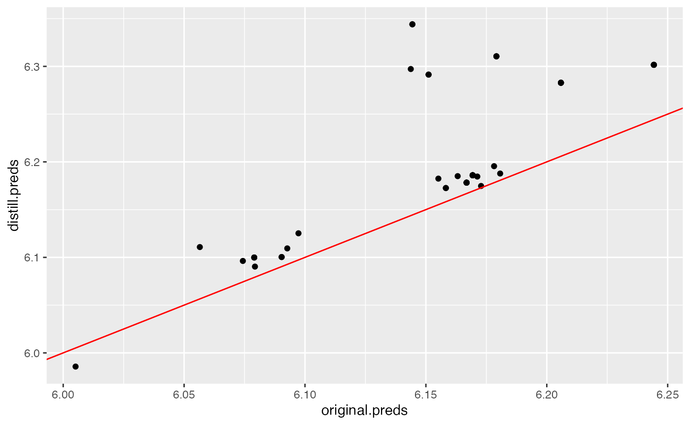
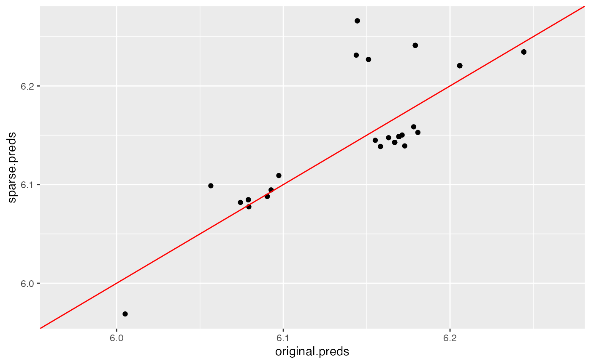

Model Distillation
We can distill a general machine learning model into an interpretable
additive combination of the PDP functions of the model. This is done by
creating a linear combination of the univariate PDP curves with
nonnegative weights, fit to the predictions of the original model. To
create a surrogate model from the original model, we first create an
Interpreter object.
# Load the required packages
library(distillML)
library(Rforestry)
# Load in data
data("iris")
set.seed(491)
data <- iris
# Split data into train and test sets
train <- data[1:100, ]
test <- data[101:150, ]
# Train a random forest on the data set
forest <- forestry(x=train[, -1],
y=train[, 1])
# Create a predictor wrapper for the forest
forest_predictor <- Predictor$new(model = forest,
data=data,
y="Sepal.Length",
task = "regression")
forest_interpret <- Interpreter$new(predictor = forest_predictor)To create a surrogate model from the Interpreter object,
we call the function distill, which has a set of important
arguments for determining how the surrogate model makes its predictions.
The underlying method for fitting these weights is the package
glmnnet, which enables us to enforce sparsity with lasso or
ridge regression with cross-validation. Below, we give brief
explanations of the key arguments in the distill
method.
-
features: This argument is a vector of feature indices. The index of the feature is the index of the feature’s name in theInterpreterobject’s vector of features, which can be accessed in our example throughforest_interpret$features$. The default value for features is to include the indices of all valid features. -
cv: This argument takes a boolean value and determines whether we want to cross-validate the weights we derive for each PDP curve. This argument by default isFALSE, and should only be set toTRUEif we want induce sparsity through lasso or ridge regression. -
snap.grid: This argument takes a boolean value and determines if the surrogate model should make predictions using approximations with previously calculated values. By default, this isTRUE. Because of the computationally expensive calculations involved with PDP curves, this should only be switched toFALSEfor small training datasets or a small user-specifiedsamplesargument when declaring theInterpreterobject. -
snap.train: This argument takes a boolean value and determines if we make approximations through the marginal distribution of the subsampled training data, or the equally spaced grid points. By default, this isTRUE, which means that the surrogate model uses the marginal distirbution of the subsampled training data. If switched toFALSE, the distillation process becomes more computationally expensive due to having to predict these equally-spaced grid points.
# Distilling the Model With Default Settings
distilled_model <- distill(forest_interpret)The distill method returns a Surrogate
object, which can be used for further predictions. As we see in the
coefficients, each value of the categorical variable is one-hot encoded
in the weight-fitting process. In this case, we get three different
coefficients for the Species feature, one for each of the
three species of iris.
print(distilled_model)## <Surrogate>
## Public:
## center.mean: TRUE
## clone: function (deep = FALSE)
## feature.centers: 5.68409008109431 5.69014503495339 5.70669254287596 5.684 ...
## features: 1 2 3 4
## grid: list
## initialize: function (interpreter, features, weights, intercept, feature.centers,
## intercept: 5.70095795529679
## interpreter: Interpreter, R6
## snap.grid: TRUE
## weights: 1.48181923180554 1.305763819228 0.778386391268475 0.9033 ...
# get weights for each PDP curve
print(distilled_model$weights)## Sepal.Width Petal.Length Petal.Width Species_versicolor
## 1.4818192 1.3057638 0.7783864 0.9033819
## Species_virginica Species_setosa
## 0.7656621 0.8530705Inducing Sparsity in Distilled Surrogate Models
To induce sparsity in the distilled surrogate models, we can also
introduce arguments into the weight-fitting process with
cv.glmnet by specifying parameters with the
params.cv.glmnet argument. This argument is a list of
arguments that the function cv.glmnet can take. An
equivalent argument params.glment exists in the
distill method for user-specified fitting of weights when
cv = F with no penalty factor.
# Sparse Model
sparse_model <- distill(forest_interpret,
cv = T,
params.cv.glmnet = list(lower.limits = 0,
intercept = F,
alpha = 1))
print(distilled_model$weights)## Sepal.Width Petal.Length Petal.Width Species_versicolor
## 1.4818192 1.3057638 0.7783864 0.9033819
## Species_virginica Species_setosa
## 0.7656621 0.8530705
print(sparse_model$weights)## Sepal.Width Petal.Length Petal.Width Species_versicolor
## 1.1008288 1.3693586 0.9042907 0.6406511
## Species_virginica Species_setosa
## 0.2239083 0.5254830While in this case, no coefficient is set to 0, we note that the coefficients in the sparse modell tend to be smaller than in the original distilled model.
Predictions Using Surrogate Models
We use the predict function to make new predictions with
the distilled surrogate models. Note that the output of the surrogate
model is a one-column dataframe of the new predictions.
# make predictions
original.preds <- predict(forest, test[,-1])
distill.preds <- predict(distilled_model, test[,-1])[,1]
sparse.preds <- predict(sparse_model, test[,-1])[,1]
# compare MSE
rmse <- function(preds){
return(sqrt(mean((test[,1] - preds)^2)))
}
print(data.frame(original = rmse(original.preds),
distill = rmse(distill.preds),
distill.sparse = rmse(sparse.preds)))## original distill distill.sparse
## 1 0.751415 0.7124756 0.740607As measured by the test set, we see that both distilled models outperform the original random forest model, indicating that the distilled models generalize better out of sample. This varies based on use-case. We can compare how closely the distilled predictions match the original predictions by plotting them against each other below:
# create dataframe of data we'd like to plot
plot.data <- data.frame(original.preds,
distill.preds,
sparse.preds)
# plots for both default distilled model and sparse model
default.plot <- ggplot(data = plot.data, aes(x = original.preds,
y = distill.preds)) +
geom_point() + geom_abline(col = "red")
sparse.plot <- ggplot(data = plot.data, aes(x = original.preds,
y = sparse.preds)) +
geom_point() + geom_abline(col = "red")
plot(default.plot)
plot(sparse.plot)
Neither model matches exceptionally well to the original model’s predictions, as shown by these plots. In this case, we see that the regularized, sparse distilled model matches the original random forest’s predictions better than the default settings, which corroborates their similar out-of-sample performance.
For further details on the distill method, please refer
to the documentation provided in the “References” section.